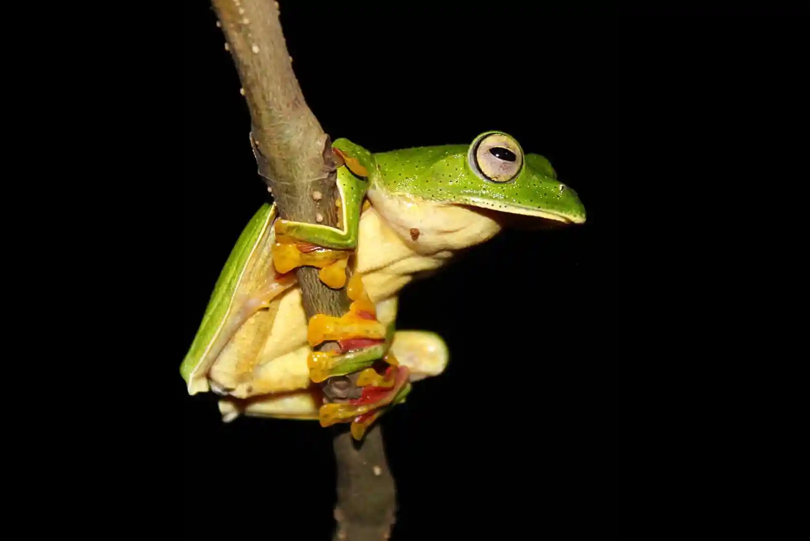
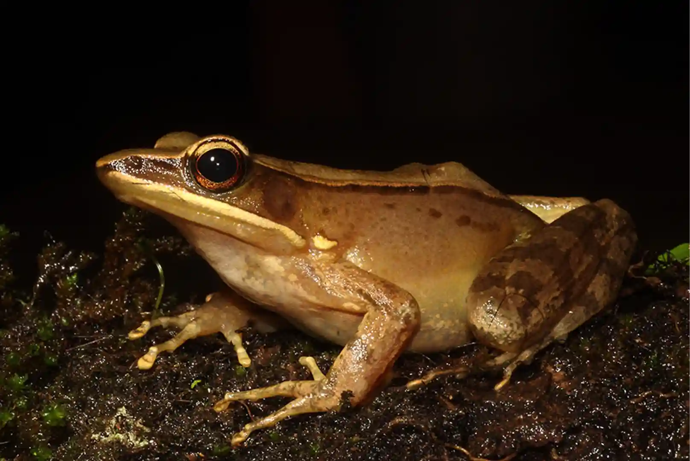

When the monsoon clouds roll over the Western Ghats, the forests of Thattekad transform into one of the most exciting wildlife destinations in India. While many visit for our famous avian residents, a Monsoon Herping Expedition in Thattekad offers an entirely different, high-adrenaline perspective on the rainforest.
Hidden beneath wet leaves, along forest streams, and inside the dense evergreen canopy, a spectacular world of Kerala rainforest reptiles and amphibians emerges in incredible diversity. For wildlife enthusiasts, photographers, and adventure seekers, this is the ultimate time to explore the Western Ghats.
What is Herping?
Herping is the dedicated search and observation of reptiles and amphibians in their natural habitats. During the monsoon season in Kerala (June to September), the high humidity and consistent rainfall trigger peak activity in frogs, snakes, and lizards. This makes it the absolute best time for herping in Kerala.
The Salim Ali Bird Sanctuary and its surrounding buffers are part of the Western Ghats—a UNESCO World Heritage site and a global biodiversity hotspot. Our Thattekad wildlife tours focus on locating endemic species that are found nowhere else on the planet.

Malabar Gliding Frog
An arboreal icon of the Western Ghats, known for its vibrant green body and ability to glide between trees using its webbed feet.

Bronze Frog
Typically found near forest streams, these amphibians are a favorite subject for macro photography due to their striking metallic sheen.
Why Thattekad is Perfect for Western Ghats Herping
While Thattekad is synonymous with birdwatching, few realize it is also one of the premier locations for snake and frog watching in Kerala. The monsoon rains "awaken" the forest floor. Species like the Malabar Pit Viper—an emerald-green jewel—become easier to spot as they wait patiently on low branches for prey.
Species Spotlight
- Malabar Pit Viper: A venomous but docile endemic viper with stunning color variations.
- Tree Frogs: Including the large, charismatic Malabar Gliding Frog.
- Shieldtail Snakes: Rare, burrowing reptiles that are only visible when the soil is moist.
- Forest Calotes & Geckos: Masters of rainforest camouflage that come alive at night.
What to Expect on Our Night Herping in Thattekad
Our guided Thattekad eco tours are carefully designed for both human safety and wildlife ethics. Night herping in Thattekad involves silent, slow-paced walks through known biodiversity corridors.
"We focus on immersive, small-group wildlife experiences rather than commercial mass tourism. Our indigenous guides use their lifelong knowledge of calls and micro-habitats to find elusive species."
Ethical Wildlife Tourism
Responsible tourism is critical in sensitive ecosystems. At Thattekad Birding, we follow strict amphibian tours in India guidelines: no handling of wildlife, no disturbance of breeding sites, and low-impact trail usage. Our goal is conservation through education.
Essential Gear for Your Adventure
If you are joining our Western Ghats herping expeditions, please bring:
- Waterproof Trekking Shoes: Essential for slippery forest trails.
- Headlamp or Flashlight: High-lumen lights are best for spotting eye-shine.
- Macro Lens: For those capturing professional wildlife photographs.
- Lightweight Quick-Dry Clothing: To stay comfortable in the humid rainforest.